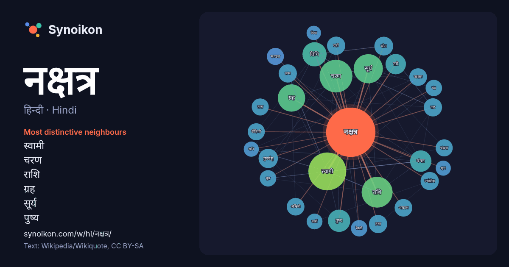

हिन्दी · Hindi · word of the day list
नक्षत्र
“star” · The words found around it in 850 instances from Hindi Wikipedia, Wikiquote.

Most distinctive neighbours
- स्वामी 49×
- चरण 34×
- राशि 33×
- ग्रह 29×
- सूर्य 28×
- पुष्य 24×
- तिथि 24×
- मंगल 20×
- पुनर्वसु 19×
- तारे 18×
- हस्त 17×
- लग्न 16×
- वार 16×
- अश्विनी 16×
- ग्रहों 15×
- ज्योतिष 15×
- रोहिणी 15×
- जातक 14×
- रेवती 14×
- मण्डल 14×
× = how many times more often than in general Hindi Wikipedia text.
Most frequent neighbours
- स्वामी 69
- चरण 52
- राशि 46
- सूर्य 41
- ग्रह 36
- जन्म 34
- दिन 29
- तिथि 28
- नाम 28
- पुष्य 24
- मंगल 22
- तारे 20
- अनुसार 18
- पुनर्वसु 18
- मूल 17
- योग 17
- समय 17
- ग्रहों 16
- ज्योतिष 16
- लग्न 16
In context
- है। ऋग्वेद में एक स्थान पर सूर्य को भी नक्षत्र कहा गया है। अन्य नक्षत्रों में सप्तर्षि और अगस्त्य हैं। नक्षत्र सूची अथर्ववेद, तैत्तिरीय संहिता, शतपथ ब्राह्मण Wikipedia snippets · नक्षत्र
- से एक लाख योजन ऊपर चंद्रमण्डल है। नक्षत्र मण्डल चंद्र मण्डल से एक लाख योजन ऊपर नक्षत्र मण्डल है। बुद्ध मण्डल नक्षत्र मण्डल से एक लाख योजन ऊपर बुद्ध मण्डल Wikipedia snippets · नक्षत्र मंडल
- कृत्तिका नक्षत्र के पूर्व में दक्षिण भाग में दिखता है। यह नक्षत्र चन्द्रमा को विशेष प्रिय है। नक्षत्रों के क्रम में चौथे स्थान पर आने वाला नक्षत्र वृष राशि Wikipedia snippets · रोहिणी नक्षत्र
- हस्त नक्षत्र 13वाँ नक्षत्र है। इस नक्षत्र का स्वामी चंद्रमा है। यह पू ष ण ढ प्रथम नाम अक्षर से पहचाना जाता है। नक्षत्र स्वामी चंद्रमा तो राशि कन्या इसका Wikipedia snippets · हस्त नक्षत्र
- चौदहवाँ नक्षत्र है। चित्रा नक्षत्र के देवता त्वष्टा हैं जो एक आदित्य हैं। इस नक्षत्र के प्रथम दो चरण कन्या राशि में आते हैं। पे पो नाम से इस नक्षत्र की पहचान Wikipedia snippets · चित्रा नक्षत्र
- में गणक विशेष ध्यान देते हैं। अनुराधा नक्षत्र में जन्म का पाणिनि ने अष्टाध्यायी में उल्लेख किया है। अनुराधा नक्षत्र का स्वामी शनि है, जो राशि स्वामी मंगल Wikipedia snippets · अनुराधा नक्षत्र
- स्वाति नक्षत्र आकाश मंडल में 15वाँ नक्षत्र होकर इसका स्वामी राहु यानि अधंकार है। कहावत भी है कि जब स्वाति नक्षत्र में ओस की बूँद सीप पर गिरती है तो मोती Wikipedia snippets · स्वाती (नक्षत्र)
- मूल नक्षत्र के चारों चरण धनु राशि में आते हैं। यह ये यो भा भी के नाम से जाना जाता है। नक्षत्र का स्वामी केतु है। वहीं राशि स्वामी गुरु है। केतु गुरु धनु Wikipedia snippets · मूल नक्षत्र
More Hindi words
- इतिहास
- ईश्वर
- कार्य
- कुत्ता
- गर्मी
- गाना
- घंटी
- घड़ी
- घोड़ा
- चाय
- चित्रकला
- छाया
- जंगल
- जलवायु
- जीवन
- तूफ़ान
- दर्पण
- द्वीप
- नमक
- परिवार
- पहाड़
- पानी
- पैसा
- प्रकृति
- बगीचा
- बिल्ली
- भाषा
- भोजन
- माता
- मानचित्र
- मृत्यु
- मौन
- रेगिस्तान
- रेलगाड़ी
- रोटी
- वर्षा
- विज्ञान
- शक्ति
- शरद
- शहद
- शहर
- सड़क
- सत्य
- समय
- सर्दी
- सेतु
- स्वर्ण
- स्वास्थ्य
- हृदय
Precomputed on 2026-10-09 with default settings (±5 words, medium corpus). The interactive map can refresh it with live data.